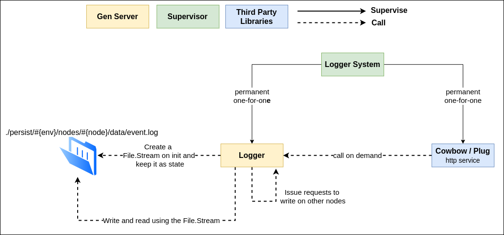
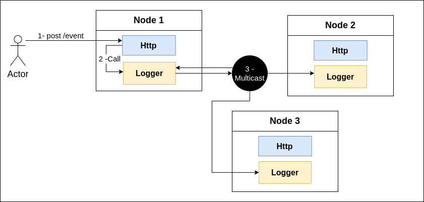

System Overview
Running the system
Requirements
- Elixir 1.11.1
- Erlang OTP 23
Testing
1 - Inside terminal, go to the project's folder
2 - mix deps.get
3 - bash ./scripts/test.sh
4 - Good to go! :)
After the first run of the test.sh you can run the tests normally using mix test
Running
You have 2 ways to run the system:
1 - Interactive shell in which you can add a custom number of servers and interact with the system in real time via IEX
2 - bash ./scripts/run.sh script inside the project's folder to start 3 fully connected nodes running on the ports 5555, 5556 and 5557
Iex
If you want to run the system via iex you can run the following command (#{xxx} must be replaced):
iex --name #{name}@127.0.0.1 --erl "-distributed_logger port #{http_port} -distributed_logger nodes #{nodes_to_connect}" -S mix
There are 3 values you need to replace here, lets break it down:
#{name}: Node's name (eg: node1)
#{http_port}: HTTP port that the node will listem (eg: 5556)
#{node_to_connect}: List of node's names that this node will connect on initialization (eg: [node2, node3])
After running this command you already have a fully functional instance of the system and you can add nodes by running this command on other terminals, just change the node name and port, and if you want to connect them pass the node name using nodes_to_connect.
For instance if you want 3 nodes connected you must run on 3 different terminals the following commands (in order):
iex --name node1@127.0.0.1 --erl "-distributed_logger port 5555 -distributed_logger nodes" -S mixiex --name node2@127.0.0.1 --erl "-distributed_logger port 5556 -distributed_logger nodes [node1]" -S mixiex --name node3@127.0.0.1 --erl "-distributed_logger port 5557 -distributed_logger nodes [node1,node2]" -S mix
With this you have a cluster with 3 fully connected nodes. Each one listening on different ports and saving event data on different files.
Shell Script
If you dont want to run with iex you can run the shell script inside the project's folder using bash ./scripts/run.sh that will start a cluster with 3 nodes as daemons. Which you can kill using the kill.sh script with sudo privileges.
Interacting
To interact with the system you can go either by terminal (only if you have chosen the IEX approach on the previous section) using the DistributedLogger module or using http requests (avaiable for both, IEX and shell script) to the listening ports of the nodes.
Iex
Via terminal you have 3 main functions to interact with:
DistributedLogger.write_global/1: Receives event data (eg: "This is event 1") it's save the event data globally
DistributedLogger.write_local/1 : Receives event data (eg: "This is event 1") it's save the event data locally
DistributedLogger.read_local/2 : Receives initial line and final line, returning a list containing all the lines requested from the local file
DistributedLogger.generate_consolidated_file/2 : Receives initial line and final line, guarantee consistency over all nodes only if inital_line <= 0 and final_line >= biggest log file line number, returns a tuple containing the file path to the generated file, file will be generated inside the node folder
The docs for all these functions can be accessed via terminal running the h command. (eg: h DistributedLogger.write_global/1)
HTTP
Alternatively you can run interact using a http request such as:
curl -X POST -H "Content-Type: text/plain" --data "This is event 1" http://127.0.0.1:5555/event
curl -X POST -H "Content-Type: text/plain" --data "This is event 2" http://127.0.0.1:5556/event
curl -X POST -H "Content-Type: text/plain" --data "This is event 3" http://127.0.0.1:5557/event
A post to the /event route is equivalent to run DistributedLogger.write_global/1 inside some terminal, actually the route just call this same function.
Log Files
If you want to see the logs that are being generated you can check inside the persist folder:
project/persist/dev/nodes/#{node}/data/event.log
Each event is in one line and the unix timestamp is added to the data
Consolidate File
Since the system is distributed errors may occur leading to inconsistency between nodes. Because of this you have the DistributedLogger.generate_consolidated_file/2 function.
You can run this function either in a already running system using the terminal or if you started the application as daemons via the shell script you can connect a new iex terminal to your already running daemon nodes using the following code inside the project's folder:
iex --name node4@127.0.0.1 --erl "-distributed_logger port 5558 -distributed_logger nodes [node1,node2,node3]" -S mix
And run the DistributedLogger.generate_consolidated_file/2 to generate the file!
System Overview
The system is quite simple, the main module is DistributedLogger which runs the gen_server, makes multicasts to other nodes and generate the consolidated version of the logs. Http requests are handled by the Cowboy library using Plug!

GenServer
The DistributedLogger genserver holds a File.Stream as its state, which is used on the message callbacks to read and write data on the file!
The server acepts basicallly 2 types of requests, read local and write local. Note that the server only handles local file management, it do not know about other nodes running different logs.
init: Creates the file if it dont exists and open the stream
write_local: Uses the file stream to append on the file
read_local: Uses the file stream to read lines from the file
Multicast
To save the data on multiple nodes the node from where you are calling DistributedLogger.write_global/1 sends a message to all other nodes.
Note that this code did not run inside the server, it actually runs on the client process, which is cowboy processes if tou are interacting via http or the iex process itself if you are interacting via terminal.
To achieve this goal the system uses the :erpc.multicast/4 function from the erlang library!

Note that the multicast function call in the exact same way all nodes (even the node where the multicast is running).
Consolidate File
This functionality is implemented inside DistributedLogger.generate_consolidated_file/2, it receives initial and final line as parameter so you can select a chunk of the files to consolidate, but remenber this isn't safe, which means that when you use a initial_line > 0 or a final_line < last line the algorithm can not guarantee the consistency. It guarantees consistency only on full file consolidations.
It implements a very simple algorithm to consolidate multiple log files. It relies on the fact that each log starts with a utc unix timestamp and that each server will at least be able to save the log on it's own file.
The algorithm steps are as following:
retrieve_lines_from_each_node()
|> select_only_unique_lines()
|> sort()
|> save_on_consolidate_file()Design Choices
Http is not the system
The system was designed to be a self contained application, which means it does not need the HTTP interface to exists, you could interact and have fully functional system without using any http interface! This reflects in the code when you see something like this:
post("event") do
{:ok, event_data, conn} = Plug.Conn.read_body(conn)
event_data
|> DistributedLogger.write_global()
|> send_http_response(conn)
endAs the code above shows, the Http turns out to be just an interface to the system, responsible for parsing the data into something understandable by the bussiness modules.
This kind of design is inpired on the famous "Clean Architecture" from Robert Martin. With this we achieve not just decoupling from the interface and business rules, but also achieve reusability, since the same system could be pluged into another interface, like a CLI!
GenServer only local
As described earlier the DistributedLogger gen_server only handles with local file management and doing simple operations like read and write from the stream. This is done on purpose so the system can be more responsive under load, because the main process (responsible for the core bussiness) will never be overwhelmed by others non-core and sometimes expensive tasks such as consolidate the file or calling other nodes.
We could extend this approach and maintain only write_local/1 inside the server, and move read_local/2 to the client too.
Cast vs Call
The DistributedLogger gen_server has 2 functions, write_local/1 which is a cast and read_local/2 which is a call. This is done again by performance reasons. Tradeoffs are clear, when using cast your client process is unbounded from the actual computation of saving an event on the file, because it doest not care about the respose, so it could serves more requests.
This benefit do not make much sense in this application as it is right now because http process has only one function implemented post event, which uses the write_local/1 function, and since this DistributedLogger is a unique locally named process , does not help much unbound the http process from the bussiness process, because although the http process is free to do anything else, the only thing it can do righ now is ask to the bussiness process which may be processing the last request any way.
Although it does not make much sense in the way the system is right now a next step to improve this system would be transforming the unique named process DistributedLogger into a dynamically generated process, running one process for each file.
For instance if your logging system serves 3 apps (app1,app2 and app3) the system would ran 3 instances of DistributedLogger one streaming data to app1.log other to app2.log and the last to app3.log.
With this natural improvement, the cast choice will be much more efficient and make a http process serves many more requests.
Multicasting it self
:erpc.multicast(
Node.list([:this, :visible]),
__MODULE__,
:write_local,
[parse_event_data(event_data)]
)When you run write_global/1 the code above is executed on the client process. Note that the node issues a message to itself. This is done to try reduce inconsistency.
Since :erpc.multicast/4 issues all the requests at the same time there is no chance to programatically saves data in one node and not on the other, this will happens only in case of network partions.
Beyond that it improves avaiability because even if the local write_local/1 function breaks, all other nodes will be called and the data comming from the http port of this node will be replicated on other nodes, keeping part of the system (http) running, even though the logging is not working on this particular node.